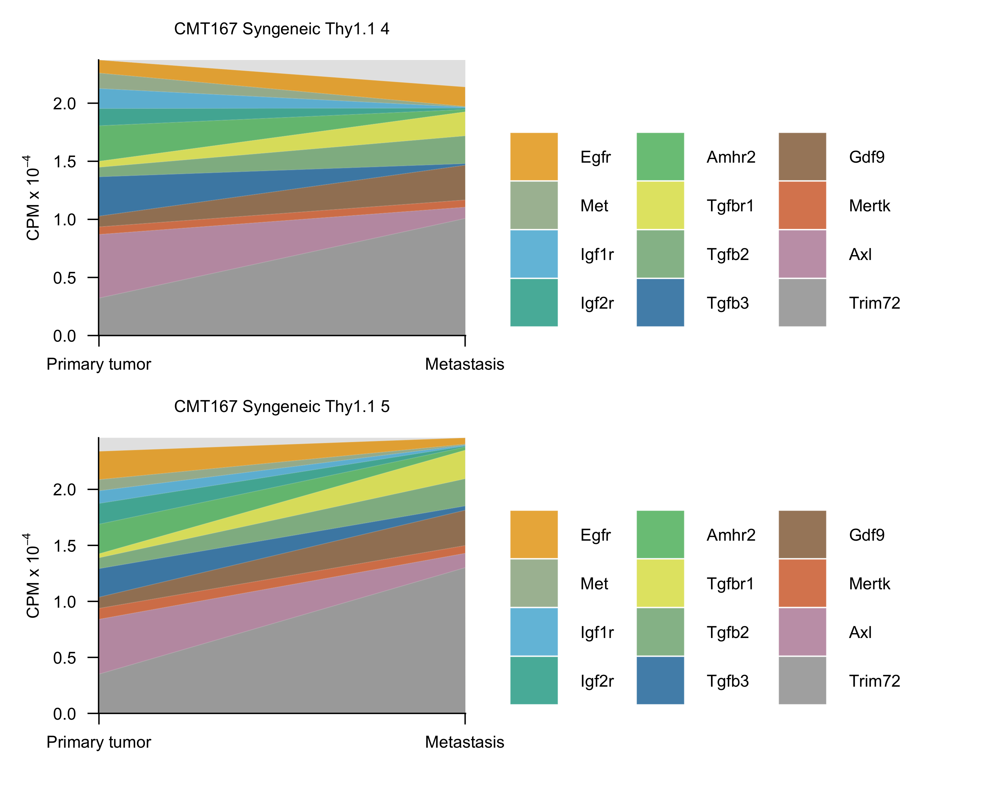

Last updated: 2025-10-31
Checks: 7 0
Knit directory: saini-stealTHY/
This reproducible R Markdown analysis was created with workflowr (version 1.7.1). The Checks tab describes the reproducibility checks that were applied when the results were created. The Past versions tab lists the development history.
Great! Since the R Markdown file has been committed to the Git repository, you know the exact version of the code that produced these results.
Great job! The global environment was empty. Objects defined in the global environment can affect the analysis in your R Markdown file in unknown ways. For reproduciblity it’s best to always run the code in an empty environment.
The command set.seed(20240517) was run prior to running
the code in the R Markdown file. Setting a seed ensures that any results
that rely on randomness, e.g. subsampling or permutations, are
reproducible.
Great job! Recording the operating system, R version, and package versions is critical for reproducibility.
Nice! There were no cached chunks for this analysis, so you can be confident that you successfully produced the results during this run.
Great job! Using relative paths to the files within your workflowr project makes it easier to run your code on other machines.
Great! You are using Git for version control. Tracking code development and connecting the code version to the results is critical for reproducibility.
The results in this page were generated with repository version 455fa91. See the Past versions tab to see a history of the changes made to the R Markdown and HTML files.
Note that you need to be careful to ensure that all relevant files for
the analysis have been committed to Git prior to generating the results
(you can use wflow_publish or
wflow_git_commit). workflowr only checks the R Markdown
file, but you know if there are other scripts or data files that it
depends on. Below is the status of the Git repository when the results
were generated:
Ignored files:
Ignored: .DS_Store
Ignored: .Rhistory
Ignored: .Rproj.user/
Ignored: analysis/.DS_Store
Ignored: analysis/templates/.DS_Store
Ignored: code/.DS_Store
Ignored: code/raw_data_processing/rnaseq/p27851_o32062/pipelines/
Ignored: configuration/.DS_Store
Ignored: data/.DS_Store
Ignored: data/crispr/
Ignored: data/resources/
Ignored: data/rnaseq/
Ignored: output/.DS_Store
Ignored: output/clinical/
Ignored: output/crispr/
Ignored: output/rnaseq/
Untracked files:
Untracked: analysis/crispr-mm_2215_sgRNA-StealTHY.md
Untracked: analysis/crispr-mm_2215_sgRNA-clonality.md
Untracked: analysis/index.md
Untracked: analysis/rnaseq-tumor-bulk.md
Untracked: analysis/style.css
Untracked: code/R-functions/subchunkify.R
Unstaged changes:
Modified: .gitignore
Modified: analysis/_site.yml
Deleted: analysis/crispr-hsapiens_2180_sgRNA_r1.Rmd
Deleted: analysis/crispr-mm_2215_sgRNA-clonality_r1.Rmd
Deleted: analysis/crispr-mm_2215_sgRNA-r2oC.Rmd
Deleted: analysis/crispr-mm_2215_sgRNA-r2oD.Rmd
Deleted: analysis/crispr-mm_2215_sgRNA-r2oD_r1.Rmd
Deleted: analysis/templates/docs/figure/gse-dotplot-amhr2_ko_culture--over--amhr2_control_culture_GSEA_msigdb.h-1.pdf
Deleted: analysis/templates/docs/figure/gse-dotplot-amhr2_ko_culture--over--amhr2_control_culture_GSEA_msigdb.h-1.png
Deleted: analysis/templates/docs/figure/gse-dotplot-amhr2_ko_notgfbeta--over--amhr2_ko_culture_GSEA_msigdb.h-1.pdf
Deleted: analysis/templates/docs/figure/gse-dotplot-amhr2_ko_notgfbeta--over--amhr2_ko_culture_GSEA_msigdb.h-1.png
Deleted: analysis/templates/docs/figure/gse-dotplot-amhr2_overexpression--over--amhr2_control_culture_GSEA_msigdb.h-1.pdf
Deleted: analysis/templates/docs/figure/gse-dotplot-amhr2_overexpression--over--amhr2_control_culture_GSEA_msigdb.h-1.png
Deleted: analysis/templates/docs/figure/gse-dotplot-amhr2_overexpression--over--amhr2_ko_culture_GSEA_msigdb.h-1.pdf
Deleted: analysis/templates/docs/figure/gse-dotplot-amhr2_overexpression--over--amhr2_ko_culture_GSEA_msigdb.h-1.png
Deleted: analysis/templates/docs/figure/gse-dotplot-amhr2_overexpression--over--amhr2_ko_notgfbeta_GSEA_msigdb.h-1.pdf
Deleted: analysis/templates/docs/figure/gse-dotplot-amhr2_overexpression--over--amhr2_ko_notgfbeta_GSEA_msigdb.h-1.png
Deleted: analysis/templates/docs/figure/gse-dotplot-invivo_amhr2_ko-+-amhr2_ko_culture--over--invivo_control_sgrna-+-amhr2_control_culture_GSEA_msigdb.h-1.pdf
Deleted: analysis/templates/docs/figure/gse-dotplot-invivo_amhr2_ko-+-amhr2_ko_culture--over--invivo_control_sgrna-+-amhr2_control_culture_GSEA_msigdb.h-1.png
Deleted: analysis/templates/docs/figure/gse-dotplot-invivo_amhr2_ko--over--invivo_control_sgrna_GSEA_msigdb.h-1.pdf
Deleted: analysis/templates/docs/figure/gse-dotplot-invivo_amhr2_ko--over--invivo_control_sgrna_GSEA_msigdb.h-1.png
Deleted: analysis/templates/docs/file/tmp/dge.xlsx
Deleted: analysis/templates/docs/file/tmp/gse_gsea_msigdb.h.xlsx
Deleted: analysis/templates/docs/file/tmp/gse_gsego_bp.xlsx
Deleted: analysis/templates/docs/file/tmp/gse_gsego_mf.xlsx
Modified: analysis/templates/rnaseq-deg-edger.Rmd
Modified: code/R-functions/gse_report.r
Modified: configuration/rmarkdown/color_palettes.R
Modified: configuration/rmarkdown/ggplot_theme.R
Modified: update_workflowr.R
Note that any generated files, e.g. HTML, png, CSS, etc., are not included in this status report because it is ok for generated content to have uncommitted changes.
These are the previous versions of the repository in which changes were
made to the R Markdown
(analysis/crispr-mm_2215_sgRNA-CMT167-LLC1-CT26.Rmd) and
HTML (docs/crispr-mm_2215_sgRNA-CMT167-LLC1-CT26.html)
files. If you’ve configured a remote Git repository (see
?wflow_git_remote), click on the hyperlinks in the table
below to view the files as they were in that past version.
| File | Version | Author | Date | Message |
|---|---|---|---|---|
| Rmd | 455fa91 | Francesc Castro-Giner | 2025-10-31 | Prepare files for publication |
| html | a6972e9 | Francesc Castro-Giner | 2025-07-01 | Build site. |
| Rmd | b6bc770 | Francesc Castro-Giner | 2025-07-01 | update crispr analysis |
Setup environment
knitr::opts_chunk$set(results='asis', echo=TRUE, message=FALSE, warning=FALSE, error=FALSE, fig.align = 'center', fig.width = 3.5, fig.asp = 0.618, dpi = 600, dev = c("png", "pdf"), fig.showtext = FALSE, engine.opts = list(bash = "-l"))
options(stringsAsFactors = FALSE)
use_seed <- 1100101
set.seed(use_seed)Load packages
library(tidyverse)
library(knitr)
library(foreach)
library(magrittr)
library(DT)
library(kableExtra)
library(diptest)
library(SummarizedExperiment)
library(openxlsx)
library(ggridges)
library(ggh4x)
library(patchwork)
library(colorblindr)
library(ggbeeswarm)
library(ggpubr)
library(MAGeCKFlute)Load ggplot theme
Load ggplot theme
Load Summarized Experiment object
Filter samples used for this analysis
Data wrangling
chunk_colData <- colData(se) %>% data.frame %>%
mutate(
vector_short = ifelse(vector_short == 'Puro_EF1alpha_SpCas9',
'Cas9+Puro', vector_short),
vector_short = ifelse(vector_short == 'Puro+ dCas9',
'Cas9+Puro', vector_short),
vector_short = factor(vector_short, levels = c('Thy1', 'Puro', 'Cas9+Puro')),
mouse_model_short = case_match(mouse_model_global,
'immunodeficient' ~ 'NSG',
'immunocompetent' ~ 'Syngeneic',
'C57BL6' ~ 'Syngeneic'
),
mouse_model_short = factor(mouse_model_short, levels = c('NSG', 'Syngeneic')),
vector_mhost = paste0(vector_short, ', ', mouse_model_short),
model_vector_mhost = paste0(donor,', ', vector_short, ', ', mouse_model_short),
sample_type = ifelse(cancer_type %in% c('Breast', 'CRC'),
case_match(sample_type,
'whole_tumor' ~ 'Primary tumor',
'whole_lung' ~ 'Lung mets',
'bulk' ~ 'Bulk',
'cell_culture' ~ 'Cell culture'),
sample_type
),
sample_type = ifelse(cancer_type %in% c('NSCLC'),
case_match(sample_type,
'met_liver' ~ 'Liver mets',
'whole_lung' ~ 'Primary tumor',
'bulk' ~ 'Bulk',
'cell_culture' ~ 'Cell culture'),
sample_type
),
sample_type = factor(sample_type, levels = c('Primary tumor', 'Lung mets', 'Liver mets', 'Bulk', 'Cell culture'))
)
colData(se) <- chunk_colData %>% DataFrameList of comparisons for differential abundance using MAGeCK, using Mets over Primary tumor
x <- colData(se) %>% data.frame
mageck_comp_list <- list(
`StealTHY KO Syngeneic CMT167` = list(
`Liver mets` = x %>% filter(vector_mmodel == 'CMT167-KO-Thy1-C57BL6' & sample_type == 'Liver mets' ) %>% pull(sample_alias),
`Primary tumor` = x %>% filter(vector_mmodel == 'CMT167-KO-Thy1-C57BL6' & sample_type == 'Primary tumor' ) %>% pull(sample_alias)
),
`StealTHY KO Syngeneic LLC1` = list(
`Liver mets` = x %>% filter(vector_mmodel == 'LLC1-KO-Thy1-C57BL6' & sample_type == 'Liver mets' ) %>% pull(sample_alias),
`Primary tumor` = x %>% filter(vector_mmodel == 'LLC1-KO-Thy1-C57BL6' & sample_type == 'Primary tumor' ) %>% pull(sample_alias)
),
`StealTHY KO Syngeneic CT26` = list(
`Liver mets` = x %>% filter(vector_mmodel == 'CT26-KO-Thy1-BALB' & sample_type == 'Lung mets' ) %>% pull(sample_alias),
`Primary tumor` = x %>% filter(vector_mmodel == 'CT26-KO-Thy1-BALB' & sample_type == 'Primary tumor' ) %>% pull(sample_alias)
)
)
mageck_comp_list_names <- names(mageck_comp_list)
names(mageck_comp_list_names) <- names(mageck_comp_list) %>% gsub(" ", "_",.) %>% tolowerdata_comp <- foreach(i = names(mageck_comp_list), .combine = rbind) %do% {
c(
Comparison = i,
Case = paste(mageck_comp_list[[i]][[1]], collapse = " "),
Control = paste(mageck_comp_list[[i]][[2]], collapse = " ")
)
}
data_comp %>%
datatable(.,
rownames = FALSE,
filter = 'top',
caption = 'List of comparisons for MAGeCK analysis',
extensions = 'Buttons',
options = list(
dom = 'Blfrtip',
buttons = c('csv', 'excel'),
columnDefs = list(
list(width = 120, targets = 1:2)
)
)
)Generate MAGeCK test scripts. To generate the script files change
eval = FALSE to eval = TRUE in the chunk
options.
The scripts must be run in the terminal, inside the path . The script will activate the mageck environment and run the test for each comparison. The results will be saved in the same directory.
chunk_se <- se
out_dir <- file.path(params$output_dir, params$mageck_dir)
dir.create(out_dir, recursive = TRUE, showWarnings = FALSE)
# Generate count matrix
count_mat <- assay(chunk_se, 'counts') %>% data.frame(check.names = FALSE) %>%
rownames_to_column('sgRNA') %>%
mutate(Gene = rowData(chunk_se)$Gene) %>%
dplyr::select(sgRNA, Gene, everything())
write_tsv(count_mat, file = file.path(out_dir, 'counts.txt'))
# Generate list of control sgRNA IDs
non_target_list <- rownames(chunk_se) %>% grep('Non_Target', ., value = T) %>% data.frame
write_tsv(non_target_list, file = file.path(out_dir, 'control_sgrna.txt'), col_names = F)
# Generate mageck commands
res_cmd <- data.frame('source activate mageckenv')
res_cmd <- foreach(i=names(mageck_comp_list), .combine = rbind) %do% {
paste('mageck test -k counts.txt --control-sgrna control_sgrna.txt --norm-method control -t', paste(mageck_comp_list[[i]][[1]], collapse = ','),'-c', paste(mageck_comp_list[[i]][[2]], collapse = ','), '-n', tolower(gsub(" ", "_", i)), '\n')
} %>% data.frame()
res_cmd <- rbind('conda activate mageckenv', res_cmd, 'conda deactivate')
write_tsv(res_cmd, file.path(out_dir, 'run_mageck_test.sh'), col_names = FALSE)gene_summ_files <- list.files(path = file.path(params$output_dir, params$mageck_dir), pattern = 'gene_summary.txt', full.names = TRUE)
analysis_prefix <- basename(gene_summ_files) %>% gsub(".gene_summary.txt", "", .)
gene_summ <- foreach(i = gene_summ_files) %do% read.delim(i, check.names = FALSE)
names(gene_summ) <- analysis_prefix
sgrna_summ_files <- list.files(path = file.path(params$output_dir, params$mageck_dir), pattern = 'sgrna_summary.txt', full.names = TRUE)
analysis_prefix <- basename(sgrna_summ_files) %>% gsub(".sgrna_summary.txt", "", .)
sgrna_summ <- foreach(i = sgrna_summ_files) %do% read.delim(i, check.names = FALSE)
names(sgrna_summ) <- analysis_prefix
gene_summ_files <- list.files(path = file.path(params$output_dir, params$mageck_dir), pattern = 'gene_summary.txt', full.names = TRUE)
analysis_prefix <- basename(gene_summ_files) %>% gsub(".gene_summary.txt", "", .)
gene_summ <- foreach(i = gene_summ_files) %do% read.delim(i, check.names = FALSE)
names(gene_summ) <- analysis_prefix
gene_summ_files <- list.files(path = file.path('./output/crispr/mm_2215_sgRNA', 'mageck_rra_expr'), pattern = 'gene_summary.txt', full.names = TRUE)
analysis_prefix <- basename(gene_summ_files) %>% gsub(".gene_summary.txt", "", .)
gene_summ_5C <- foreach(i = gene_summ_files) %do% read.delim(i, check.names = FALSE)
names(gene_summ_5C) <- analysis_prefix# File name gene summary
rmd_file <- current_input()
if(is.null(rmd_file))
rmd_file <- 'tmp'
gene_file_xlsx <- file.path('./docs/file',rmd_file, 'mageck_gene_summary.xlsx')
sgrna_file_xlsx <- file.path('./docs/file',rmd_file, 'mageck_sgrna_summary.xlsx')for(i in names(mageck_comp_list)) {
i <- tolower(i) %>% gsub(" ", "_",.)
file_xlsx <- file.path('./docs/file',rmd_file, paste0(i, '_mageck_results.xlsx'))
dir.create(dirname(file_xlsx), recursive = TRUE, showWarnings = FALSE)
# Generate workbook
wb <- createWorkbook()
wsn <- 'gene_summ'
addWorksheet(wb, wsn)
writeData(wb, wsn, gene_summ[[i]])
wsn <- 'sgrna_summ'
addWorksheet(wb, wsn)
saveWorkbook(wb, file_xlsx, TRUE)
}# File name gene summary
file_xlsx <- gene_file_xlsx
dir.create(dirname(file_xlsx), recursive = TRUE, showWarnings = FALSE)
# Generate workbook
wb <- createWorkbook()
for(i in names(gene_summ)) {
addWorksheet(wb, i)
writeData(wb, i, gene_summ[[i]])
}
saveWorkbook(wb, file_xlsx, TRUE)
# File name sgRNA summary
file_xlsx <- sgrna_file_xlsx
dir.create(dirname(file_xlsx), recursive = TRUE, showWarnings = FALSE)
# Generate workbook
wb <- createWorkbook()
for(i in names(sgrna_summ)) {
addWorksheet(wb, i)
writeData(wb, i, sgrna_summ[[i]])
}
saveWorkbook(wb, file_xlsx, TRUE)The tables of results can be downloaded using the following links:
For file format description, visit MAGeCK output
Download the results by comparison, including gene-set analysis level:
x <- foreach(i=names(mageck_comp_list), .combine = c) %do% {
ilower <- tolower(i) %>% gsub(" ", "_",.)
file_xlsx <- file.path('./file', rmd_file, paste0(ilower, '_mageck_results.xlsx'))
paste0("[", i, "](", file_xlsx,")", sep = "")
}
cat(paste(x, collapse = ' - '), "\n\n")StealTHY KO Syngeneic CMT167 - StealTHY KO Syngeneic LLC1 - StealTHY KO Syngeneic CT26
gene_info <- readxl::read_xlsx('./data/resources/selected_gene_list/gene_list_for_figure_5c_additional_models.xlsx')
use_colors <- c(
`Immune system cytokines and chemokines` = 'grey',
`Immune system cytokines\nand chemokines` = 'grey',
`Interferone, TNF and danger/death-inducing signals` = 'black',
`Interferon, TNF\nand danger/death-inducing\nsignals` = 'black',
`Interferon, TNF and\ndanger/death-inducing\nsignals` = 'black',
`TGF-β family related` = 'red',
`RTK signaling` = 'blue',
`Positive controls` = 'black'
)
use_fill <- c(
`Immune system cytokines and chemokines` = 'grey',
`Immune system cytokines\nand chemokines` = 'grey',
`Interferone, TNF and danger/death-inducing signals` = 'black',
`Interferon, TNF\nand danger/death-inducing\nsignals` = 'black',
`Interferon, TNF and\ndanger/death-inducing\nsignals` = 'black',
`TGF-β family related` = 'red',
`RTK signaling` = 'blue',
`Positive controls` = 'white'
)
use_shape <- c(
`Immune system cytokines and chemokines` = 16,
`Immune system cytokines\nand chemokines` = 16,
`Interferone, TNF and danger/death-inducing signals` = 16,
`Interferon, TNF\nand danger/death-inducing\nsignals` = 16,
`Interferon, TNF and\ndanger/death-inducing\nsignals` = 16,
`TGF-β family related` = 16,
`RTK signaling` = 16,
`Positive controls` = 1
)
gene_levels <- rev(gene_info$id)
gene_levels_list <- list()
gene_levels_list[['stealthy_ko_syngeneic_llc1']] <- c(
"Pcna",
"Amh", "Amhr2", "Tgfbr2", "Acvr2b", "Gdf15", "Tgfb3", "Tgfbr1",
"Mertk", "Igf2r", "Angpt2", "Igf1r", "Egfr", "Axl", "Gas6",
"Plk1","Trim72",
"Cd30","Ifnlr1","Ifnar1","Trail","Ifne","Lta","Ltbr","Tnfr2","Light",
"Ccl25","Cxcl9","Ccrl2","Cxcr5","Ccr6","Ccr4","Relt", "Il18ra1", "Il13ra2", "Il13ra1", "Il18","Cxcl4","Ccl4","Cxcl14"
)
gene_levels_list[['stealthy_ko_syngeneic_ct26']] <- c(
"Pcna",
'Amhr2', 'Amh', 'Gdf15', 'Tgfbr2', 'Gdf9', 'Acvr1b', 'Tgfbr1',
'Axl', 'Egfr', 'Erbb3', 'Igf2r', 'Mertk', 'Gas6', 'Met',
"Plk1","Trim72",
"Cd30","Ifnlr1","Ifnar1","Trail","Ifne","Lta","Ltbr","Tnfr2","Light",
"Ccl25","Cxcl9","Ccrl2","Cxcr5","Ccr6","Ccr4","Relt", "Il18ra1", "Il13ra2", "Il13ra1", "Il18","Cxcl4","Ccl4","Cxcl14"
)
gene_levels_list[['stealthy_ko_syngeneic_cmt167']] <- c(
"Pcna",
'Amhr2', 'Amh', 'Gdf9', 'Acvr1b', 'Acvr1', 'Tgfbr2', 'Tgfbr1',
'Met', 'Igf1r', 'Igf2r', 'Egfr', 'Mertk', 'Axl', 'Angpt2',
"Plk1","Trim72",
"Cd30","Ifnlr1","Ifnar1","Trail","Ifne","Lta","Ltbr","Tnfr2","Light",
"Ccl25","Cxcl9","Ccrl2","Cxcr5","Ccr6","Ccr4","Relt", "Il18ra1", "Il13ra2", "Il13ra1", "Il18","Cxcl4","Ccl4","Cxcl14"
)Dot plots highlighting hits identified following the strategy depicted in Fig. 4A upon transplantation in immunocompetent hosts of metastatic lung carcinoma cells (LLC1, C167) and colon carcinoma cells (CT26) previously subjected to StealTHY KO; representative genes from two recurrently identified categories are shown in comparison across screening methods. The fold-change values indicate differential sgRNA abundance between primary tumors and lung metastases; n=5 each; RTK, receptor tyrosine kinase; Ca, carcinoma; FDR, false discovery rate; Tnf, tumor necrosis factor; Ifn, interferon.
use_comp <- names(gene_summ)
# FDR limits
xfdr <- foreach(i=gene_summ[use_comp], .combine = rbind) %do% {
i %>%
ReadRRA(score = 'lfc') %>%
dplyr::rename(LFC = Score) %>%
left_join(gene_info, by = c('id' = 'id')) %>%
filter(!is.na(gene_set)) %>%
pull(FDR) %>%
min
}
maxFDR <- -log10(xfdr[,1]) %>% max
xlfc <- foreach(i=gene_summ, .combine = rbind) %do% {
i %>%
ReadRRA(score = 'lfc') %>%
dplyr::rename(LFC = Score) %>%
left_join(gene_info, by = c('id' = 'id')) %>%
filter(!is.na(gene_set)) %>%
pull(LFC) %>%
abs %>% max
}
i <- use_comp[1]
for(i in use_comp) {
cat("####", mageck_comp_list_names[i], "\n\n")
gene_levels <- gene_levels_list[[i]]
x <- gene_summ[[i]] %>%
ReadRRA(score = 'lfc') %>%
dplyr::rename(LFC = Score) %>%
left_join(gene_info, by = c('id' = 'id')) %>%
filter(!is.na(gene_set)) %>%
filter(gene_name %in% gene_levels) %>%
mutate(
gene_name = factor(gene_name, levels = gene_levels),
gene_set = ifelse(
gene_set == 'Immune system cytokines and chemokines',
'Immune system cytokines\nand chemokines',
gene_set
),
gene_set = ifelse(
gene_set == 'Interferone, TNF and danger/death-inducing signals',
'Interferon, TNF and\ndanger/death-inducing\nsignals',
gene_set
),
gene_set = factor(gene_set, names(use_colors))
)
xlim <- c(-ceiling(max(abs(x$LFC), na.rm = TRUE)),
ceiling(max(abs(x$LFC), na.rm = TRUE)))
size_breaks <- c(0, 0.25, 0.5, ceiling(maxFDR))
res <- x %>%
ggplot(aes(LFC, gene_name, color = gene_set, size = -log10(FDR))) +
geom_point(aes(shape = gene_set)) +
geom_vline(xintercept = 0, linetype = 3, linewidth = one_pt/2) +
scale_y_discrete(expand = expansion(add = c(1, 1))) + # add fixed units around each facet to avoid lines over points
scale_color_manual(values = use_colors) +
scale_size(range = c(0.5, 2.5),
limits = c(0, ceiling(maxFDR)),
breaks = size_breaks,
labels = size_breaks %>% as.character # remove trailing 0 from decimals
) +
scale_shape_manual(values = use_shape) +
scale_x_continuous(
expand = expansion(add = c(1, 1))
) +
facet_grid(rows = vars(gene_set), scales = 'free_y', space = 'free_y') +
theme_facet +
theme(
axis.ticks = element_line(linewidth = one_pt/2, color = 'black'),
panel.border = element_rect(linewidth = one_pt/2, color = 'black'),
axis.text = element_text(size=8),
axis.title = element_text(size = 8),
legend.title = element_text(size=8),
legend.text = element_text(size=8),
strip.text = element_text(size = 4)
) +
labs(
x = expression(paste("lo", g[2],"(Fold change)")),
y = NULL,
size = expression(paste("-lo", g[10],"(FDR)")),
title =
) +
guides(color = 'none', shape = 'none')
res <- res +
scale_x_continuous(
expand = expansion(add = c(1, 1)),
limits = xlim
)
print(res)
cat('\n\n')
}Muller plots depicting the relative frequency of unique gene KOs in matched primary lung tumors versus synchronous liver metastasis samples from syngeneic recipients transplanted with C167 lung carcinoma cells, previously transduced with the mouse interactome library; n=5 (two representative samples are shown).
x <- colData(se) %>% data.frame
mageck_comp_list <- list(
`StealTHY KO Syngeneic CMT167` = list(
`Primary tumor` = x %>% filter(vector_mmodel == 'CMT167-KO-Thy1-C57BL6' & sample_type == 'Primary tumor' ) %>% pull(sample_alias),
`Liver mets` = x %>% filter(vector_mmodel == 'CMT167-KO-Thy1-C57BL6' & sample_type == 'Liver mets' ) %>% pull(sample_alias)
),
`StealTHY KO Syngeneic LLC1` = list(
`Primary tumor` = x %>% filter(vector_mmodel == 'LLC1-KO-Thy1-C57BL6' & sample_type == 'Primary tumor' ) %>% pull(sample_alias),
`Liver mets` = x %>% filter(vector_mmodel == 'LLC1-KO-Thy1-C57BL6' & sample_type == 'Liver mets' ) %>% pull(sample_alias)
),
`StealTHY KO Syngeneic CT26` = list(
`Primary tumor` = x %>% filter(vector_mmodel == 'CT26-KO-Thy1-BALB' & sample_type == 'Primary tumor' ) %>% pull(sample_alias),
`Liver mets` = x %>% filter(vector_mmodel == 'CT26-KO-Thy1-BALB' & sample_type == 'Lung mets' ) %>% pull(sample_alias)
)
)
comp_list_muller <- list(
`Comparison 1` = list(
`CMT167 Syngeneic Thy1.1 4` = c('C167_StealTHY_Tum_4', 'C167_StealTHY_Met_4'),
`CMT167 Syngeneic Thy1.1 5` = c('C167_StealTHY_Tum_5', 'C167_StealTHY_Met_5')
)
)
genes_list_1 <- gene_info %>%
filter(gene_set %in% c("TGF-β family related", "RTK signaling", "Positive controls")) %>%
pull(id)
genes_list_2 <- gene_info %>%
filter(!gene_set %in% c("TGF-β family related", "RTK signaling", "Positive controls")) %>%
pull(id)cpm_threshold <- 10000
comp_list <- comp_list_muller
use_genes <- c(
"Egfr",
'Met',
'Igf1r',
'Igf2r',
'Amhr2',
'Tgfbr1',
'Tgfb2',
'Tgfb3',
'Gdf9',
'Mertk',
'Gas9',
'Axl',
'Trim72'
)
# Create DF
use_df <- assay(se, 'cpm') %>% data.frame(check.names = FALSE) %>%
rownames_to_column('guide') %>%
mutate(
gene = rowData(se)$Gene,
gene = ifelse(grepl('Non_Target', gene), 'Non_Target', gene)
) %>%
filter(gene %in% use_genes) %>%
pivot_longer(-c(guide, gene), names_to = 'sample_alias', values_to = 'cpm')
j <- names(comp_list)[1]
muller_plots <- foreach(j = names(comp_list)) %do% {
i <- comp_list[[j]][[1]]
iname <- names(comp_list[[j]])[1]
res <- foreach(iname = names(comp_list[[j]])) %do% {
i <- comp_list[[j]][[iname]]
x <- use_df %>%
filter(sample_alias %in% i) %>%
mutate(
sample_type = ifelse(sample_alias == i[1], 'Primary tumor', 'Metastasis'),
sample_type = factor(sample_type, levels = c('Primary tumor', 'Metastasis'))
)
# Group CPM by gene
x %<>%
group_by(gene, sample_alias, sample_type) %>%
summarise(cpm = sum(cpm)) %>%
mutate(
gene = factor(gene, levels = use_genes)
)
use_cols <- c(
'low abundant' = 'grey80',
colorRampPalette(palette_OkabeIto)(nlevels(x$gene)) %>% set_names(levels(x$gene))
)
x %>%
ggplot( aes(x = sample_type, y = cpm/10000, group = gene, fill = gene)) +
geom_area(colour = alpha("white", 0.1), linewidth = 0.08, alpha = 0.8) +
scale_fill_manual(values = use_cols, guide = guide_legend(ncol = 3)) +
labs(
x = '',
y = expression("CPM x 10"^-4),
title = iname,
fill = ''
) +
scale_x_discrete(expand = c(0, 0)) +
scale_y_continuous(expand = c(0, 0)) +
# guides(fill = 'none') +
theme(
panel.background = element_rect(fill = "grey90"),
plot.margin = margin(0, 0.5, 0, 0, "cm"),
axis.text = element_text(size=3),
axis.title = element_text(size=3),
plot.title = element_text(size=3, hjust = 0.5),
legend.text = element_text(size=3)
)
}
names(res) <- names(comp_list[[j]])
return(res)
}
names(muller_plots) <- names(comp_list)for (i in names(muller_plots)) {
cat('###', i, '\n\n')
wrap_plots(muller_plots[[i]], ncol = 1) %>% print
cat('\n\n')
}
| Version | Author | Date |
|---|---|---|
| a6972e9 | Francesc Castro-Giner | 2025-07-01 |
R version 4.4.3 (2025-02-28) Platform: aarch64-apple-darwin20 Running under: macOS 26.0.1
Matrix products: default BLAS: /Library/Frameworks/R.framework/Versions/4.4-arm64/Resources/lib/libRblas.0.dylib LAPACK: /Library/Frameworks/R.framework/Versions/4.4-arm64/Resources/lib/libRlapack.dylib; LAPACK version 3.12.0
locale: [1] en_US.UTF-8/en_US.UTF-8/en_US.UTF-8/C/en_US.UTF-8/en_US.UTF-8
time zone: Europe/Zurich tzcode source: internal
attached base packages: [1] stats4 stats graphics grDevices utils
datasets methods
[8] base
other attached packages: [1] cowplot_1.2.0 MAGeCKFlute_2.9.0
[3] ggpubr_0.6.1 ggbeeswarm_0.7.2
[5] colorblindr_0.1.0 colorspace_2.1-1
[7] patchwork_1.3.1 ggh4x_0.3.1
[9] ggridges_0.5.6 openxlsx_4.2.8
[11] SummarizedExperiment_1.36.0 Biobase_2.66.0
[13] GenomicRanges_1.58.0 GenomeInfoDb_1.42.3
[15] IRanges_2.40.1 S4Vectors_0.44.0
[17] BiocGenerics_0.52.0 MatrixGenerics_1.18.1
[19] matrixStats_1.5.0 diptest_0.77-1
[21] kableExtra_1.4.0 DT_0.34.0
[23] magrittr_2.0.3 foreach_1.5.2
[25] knitr_1.50 lubridate_1.9.4
[27] forcats_1.0.0 stringr_1.5.1
[29] dplyr_1.1.4 purrr_1.1.0
[31] readr_2.1.5 tidyr_1.3.1
[33] tibble_3.3.0 ggplot2_3.5.2
[35] tidyverse_2.0.0 workflowr_1.7.1
loaded via a namespace (and not attached): [1] splines_4.4.3
later_1.4.4 ggplotify_0.1.2
[4] bitops_1.0-9 filelock_1.0.3 cellranger_1.1.0
[7] R.oo_1.27.1 graph_1.84.1 XML_3.99-0.19
[10] lifecycle_1.0.4 httr2_1.2.1 rstatix_0.7.2
[13] rprojroot_2.1.0 processx_3.8.6 lattice_0.22-7
[16] crosstalk_1.2.2 backports_1.5.0 sass_0.4.10
[19] rmarkdown_2.29 jquerylib_0.1.4 yaml_2.3.10
[22] ggtangle_0.0.7 httpuv_1.6.16 zip_2.3.3
[25] depmap_1.20.0 DBI_1.2.3 RColorBrewer_1.1-3
[28] abind_1.4-8 zlibbioc_1.52.0 R.utils_2.13.0
[31] RCurl_1.98-1.17 yulab.utils_0.2.0 rappdirs_0.3.3
[34] git2r_0.36.2 GenomeInfoDbData_1.2.13 enrichplot_1.26.6
[37] ggrepel_0.9.6 tidytree_0.4.6 svglite_2.2.1
[40] codetools_0.2-20 DelayedArray_0.32.0 DOSE_4.0.1
[43] xml2_1.3.8 tidyselect_1.2.1 aplot_0.2.8
[46] UCSC.utils_1.2.0 farver_2.1.2 BiocFileCache_2.14.0
[49] pathview_1.46.0 jsonlite_2.0.0 Formula_1.2-5
[52] iterators_1.0.14 systemfonts_1.2.3 tools_4.4.3
[55] treeio_1.30.0 Rcpp_1.1.0 glue_1.8.0
[58] gridExtra_2.3 SparseArray_1.6.2 xfun_0.53
[61] qvalue_2.38.0 withr_3.0.2 BiocManager_1.30.26
[64] fastmap_1.2.0 callr_3.7.6 digest_0.6.37
[67] gridGraphics_0.5-1 timechange_0.3.0 R6_2.6.1
[70] textshaping_1.0.1 GO.db_3.20.0 dichromat_2.0-0.1
[73] RSQLite_2.4.3 R.methodsS3_1.8.2 generics_0.1.4
[76] data.table_1.17.8 httr_1.4.7 htmlwidgets_1.6.4
[79] S4Arrays_1.6.0 whisker_0.4.1 pkgconfig_2.0.3
[82] gtable_0.3.6 blob_1.2.4 XVector_0.46.0
[85] clusterProfiler_4.14.6 htmltools_0.5.8.1 carData_3.0-5
[88] fgsea_1.32.4 scales_1.4.0 png_0.1-8
[91] ggfun_0.2.0 rstudioapi_0.17.1 tzdb_0.5.0
[94] reshape2_1.4.4 nlme_3.1-168 curl_7.0.0
[97] org.Hs.eg.db_3.20.0 cachem_1.1.0 BiocVersion_3.20.0
[100] parallel_4.4.3 vipor_0.4.7 AnnotationDbi_1.68.0
[103] pillar_1.11.0 grid_4.4.3 vctrs_0.6.5
[106] promises_1.3.3 car_3.1-3 dbplyr_2.5.0
[109] beeswarm_0.4.0 Rgraphviz_2.50.0 evaluate_1.0.5
[112] KEGGgraph_1.66.0 cli_3.6.5 compiler_4.4.3
[115] rlang_1.1.6 crayon_1.5.3 ggsignif_0.6.4
[118] labeling_0.4.3 ps_1.9.1 getPass_0.2-4
[121] plyr_1.8.9 fs_1.6.6 stringi_1.8.7
[124] viridisLite_0.4.2 BiocParallel_1.40.2 Biostrings_2.74.1
[127] lazyeval_0.2.2 GOSemSim_2.32.0 Matrix_1.7-3
[130] ExperimentHub_2.14.0 hms_1.1.3 bit64_4.6.0-1
[133] KEGGREST_1.46.0 AnnotationHub_3.14.0 igraph_2.1.4
[136] broom_1.0.9 memoise_2.0.1 bslib_0.9.0
[139] ggtree_3.14.0 fastmatch_1.1-6 bit_4.6.0
[142] readxl_1.4.5 gson_0.1.0 ape_5.8-1